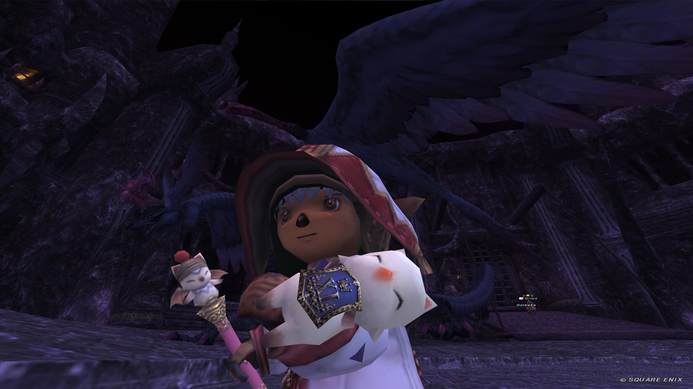

FFXI RANGED JOB GUIDES
いま必要な攻略へ、
最短で。
狩人・コルセア特化の装備、金策、エンドコンテンツ攻略。
新規から現役プレイヤーまで、次にやることを迷わせないFF11ガイド。

START HERE
いまのあなたに合う入口
GEAR GUIDES
狩人とコルセアの
装備を詰める。
入門からハイエンドまで。目的別に装備セット、オグメ、立ち回りを確認できます。

TOOLS
調べる時間を、戦う時間へ。
⚔INTERACTIVE TOOL
開く →FFXI 連携逆引きシミュレーター
武器種と作りたい連携属性から、WSの組み合わせを探せます。
LATEST UPDATES